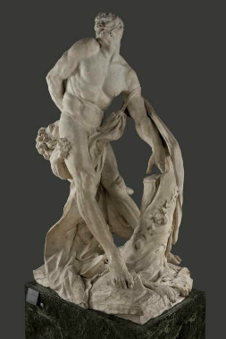

返回主页
《克罗顿的米隆》

《宰相洛兰的圣母》
《赫敏（Hermione Granger）为什么不能嫁给哈利 波特（Harry Potter）》
李赋宁《英语史》
Michelangelo
Trifles make perfection, and perfection is no trifle.
Carving is easy; you just go down to the skin and stop.
I saw an angel in the block of marble and I just chiseled until I set him free.
Statue of David, "It is easy. You just chip away the stone that doesn't look like David."
Beauty is the purgation (purge) of superfluities 多余. Genius is eternal patience.
Picasso
Art is the elimination of the unnecessary.
Every act of creation is first an act of destruction.
All children are artists. The problem is how to remain an artist once he grows up.
Bad artists copy. Good artists steal.
I do not seek. I find.
version:1.0; jobnet@188.com © retter2012.com